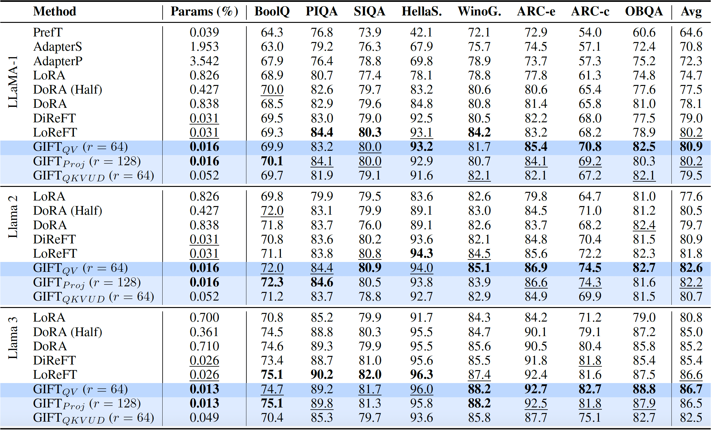
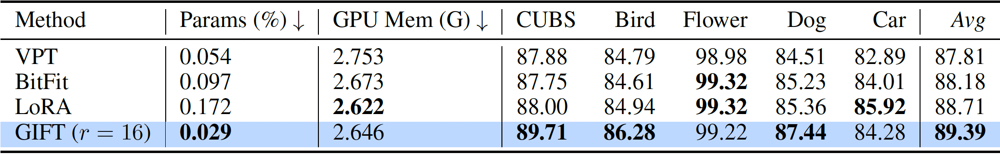
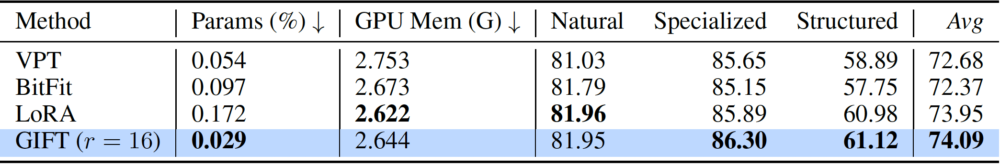
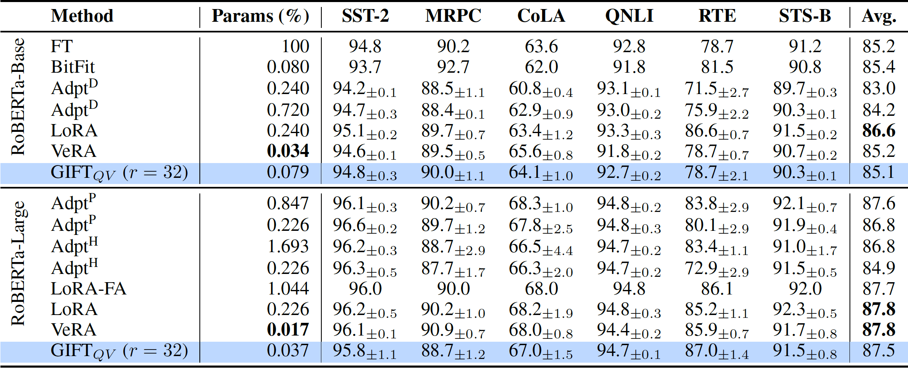

LoRA (a) is a layer-specific fine-tuning paradigm by learning the low-rank weight residuals directly as model
parameters in optimization. Our GIFT (b) is a deep weight-residual learning paradigm, which is shared across all
the layers by treating pretrained weights from different fine-tuning layers (e.g., \(L\)) as a batch of input
''data'' and directly computes fine-tuned weights via residual learning. We show that simply
parameterizing GIFT with two plain linear layers (without bias terms) is surprisingly effective, i.e.,
\(\hat{\omega}=\omega \cdot (\mathbb{I}+\phi_{d_{in}\times r}\cdot \psi_{r\times d_{in}})\) where \(\mathbb{I}\)
is an identity matrix. \(\Theta=(\phi, \psi)\) are the learnable parameters of the two linear projections (layers) of GIFT
with \(r\) being a hyper-parameter. During fine-tuning, the loss function for a downstream task is optimized with respect
to the parameters of GIFT \((\Theta)\). After applying GIFT to a linear layer in the pretrained Transformer, the output of the layer can be written as \(\hat{y}_{ N\times d_{out}} = x_{ N\times d_{in}} \cdot \underbrace{\hat{\omega}^{\top}}_{\text{GIFTed weights}} + b =\underbrace{x_{ N\times d_{in}} \cdot (\mathbb{I} + \psi^{\top}\cdot \phi^{\top})}_{\text{GIFTed activation, denoted by } \hat{x}_{ N\times d_{in}}} \cdot \omega^{\top} + b\).
With this formulation, our GIFT can be equivalentlty applied to the activation/representation space.
How expressive is this simple GIFT?
Left: Comparison of accuracy vs. parameters between different PEFT methods and GIFT on the Commonsense170k benchmark
using LLaMa-1 (7B), and Llama-2 (7B)-3 (8B) models. GIFT obtains better performance with significant;y fewer parameters.
Right: When GIFT is applied to fine-tune the projection layers in the multi-head self-attention modules of Vision Tranformers on image classification tasks,
the output of the first linear layer \((C_{d_{out}\times r}=\omega_{d_{out}\times d_{in}}\cdot \phi_{d_{in}\times r})\) plays the role
of a \(r\)-way segmentation/token-clustering head. This localization ability emerges as a by-product without any direct supervision for the segmentation maps,
using the standard cross-entropy loss during fine-tuning.
The maps can form on objects/parts in images, even handling occlusions (e.g., the bird body in the right-bottom row),
and finding relevant objects (full bird, head in right-top row) even if the object occupies a small part of the image.
Results: Commonsense170k

Results: Visual Recognition
For the visual recognition tasks, we fine-tune the ViT-B/16 model pretrained on ImageNet21k using a supervised objective (which is available in timm).
FGVC Benchmark

GIFT performs better than all the baselines on the FGVC benchmark. Moreover, we show that meaningful visual segmentation/token-clustering maps are formed.
We show examples of head, wings and legs of birds in the top-left, examples of flower
petals in the top-right, examples of head, ears and legs of dogs in the bottom-left, and
examples of tires, windshield and bumper of cars in the bottom-right. We can see global (object level)
as well as part-level maps.
VTAB Benchmark

Results: Natural Language Understanding (GLUE)

BibTeX
@misc{savadikar2024gift,
title={GIFT: Generative Interpretable Fine-Tuning},
author={Chinmay Savadikar and Xi Song and Tianfu Wu},
year={2024},
eprint={2312.00700},
archivePrefix={arXiv},
primaryClass={cs.CV}
}